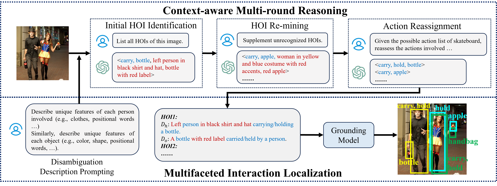
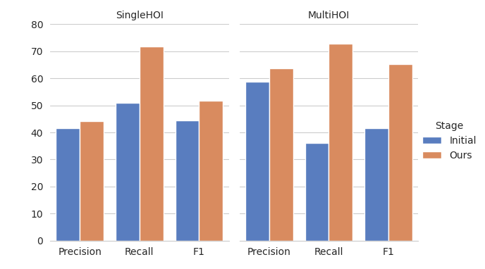
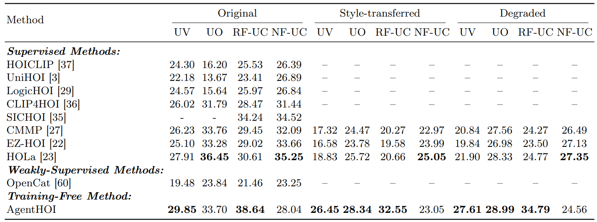
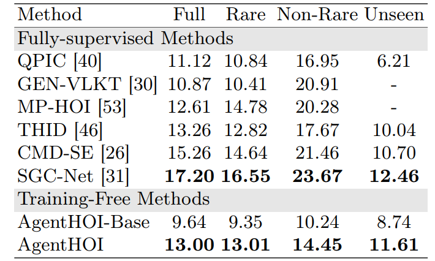
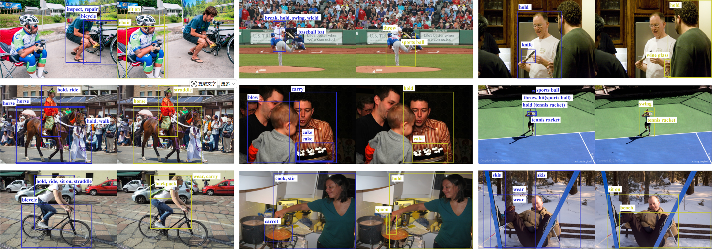

Training-free
No HOID data, task-specific classifier, or parameter update is required.
ECCV 2026
AgentHOI reformulates human-object interaction detection as a structured reasoning-and-grounding process, requiring no HOI-specific training data or parameter updates.
Wangxuan Institute of Computer Technology, Peking University
* Equal contribution
Overview
Human-object interaction detection has traditionally been formulated as supervised detection over predefined interaction categories. This closed-set paradigm limits generalization to open-world and compositional scenarios, where interaction patterns are diverse, long-tailed, and often ambiguous.
AgentHOI is a training-free, agentic framework that transfers the generalist multimodal reasoning capability of foundation models to structured HOI detection. Instead of learning interaction classifiers, it orchestrates complementary vision foundation modules for open-ended semantic reasoning and spatial grounding.
No HOID data, task-specific classifier, or parameter update is required.
MLLMs infer plausible human-action-object triplets beyond fixed vocabularies.
Instance-specific descriptions help localize ambiguous human-object pairs.
Method
AgentHOI coordinates a multimodal perception module and a spatial localization module. Context-aware multi-round reasoning progressively discovers missed interactions, while multifaceted interaction localization enriches grounding prompts with semantic, spatial, and appearance cues.

Reasoning
In cluttered scenes, a single MLLM query may focus on only the most salient triplets. AgentHOI uses identified interactions as contextual anchors, re-mines additional HOIs, and reassigns fine-grained actions to improve interaction completeness.
Analysis



Quantitative Results
AgentHOI achieves strong performance without HOI-specific training, showing competitive generalization on HICO-DET and SWIG-HOI. Table values are mAP unless otherwise noted.


Visualization
AgentHOI produces structured interaction predictions with localized human-object pairs across diverse real-world scenes.

Citation
@inproceedings{lei2026agenthoi,
title={Unleashing Multimodal Large Language Models for Training-free HOI Detection in the Wild},
author={Lei, Ting and Liu, Jialin and Xu, Zhu and Peng, Yuxin and Liu, Yang},
booktitle={European Conference on Computer Vision},
year={2026}
}